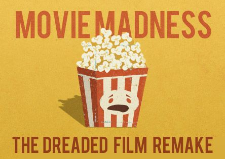

Sherlock Holmes
Sherlock Holmes
In the 21st Century...
Sherlock Holmes In the 21st Century...

There is a nexus point at which fan studies, the rhetoric of popular culture, and postmodernist critical theory intersect. Any time an interpretation of a beloved character, book, or series departs substantially from its original, the specialized audience of dedicated fans who have learned to value that original are disappointed. (Horton 178)
The movie and TV remakes took very different approaches to the Sherlock Holmes story and despite widespread approval from the public, there was less support for the film from the select but active international subculture of dedicated Sherlock Holmes aficionados. The two best-known organizations dedicated to the topic are the Sherlock Holmes Society of London, and the Baker Street Irregulars (Horton 177). The degree to which an audience is prepared to suspend their disbelief equates to the commercial success of the text—the larger the target audience, the greater the commercial impact. Horton further explains that the willing suspension of disbelief is generally dependent on individual personality or on normative group dynamics (177). Remakes are always subjected to strong comparison, especially when they remake from an original screen classic which has been successful during its release time.
Remakes are usually made in different types with the main purpose to test the anxiety and loyalty of consumers towards the brand. Having said that a remake is treated as a brand regeneration. Through brand regeneration any movie studio plans to regenerate the same success through the new make. “But with an ease of knowledge comes the factor of risk, popular originals are treated as a datum for comparison with the new one and at many times the remake has to suffer- the consequences of satiation in spite of being a good fit to the original one.” (Muzumdar 9). Satiation is a feeling produced when a consumer is fed with the same information during certain period of time because of which his way of understanding and processing information of the same type gets altered (Sood and Dreze 353).